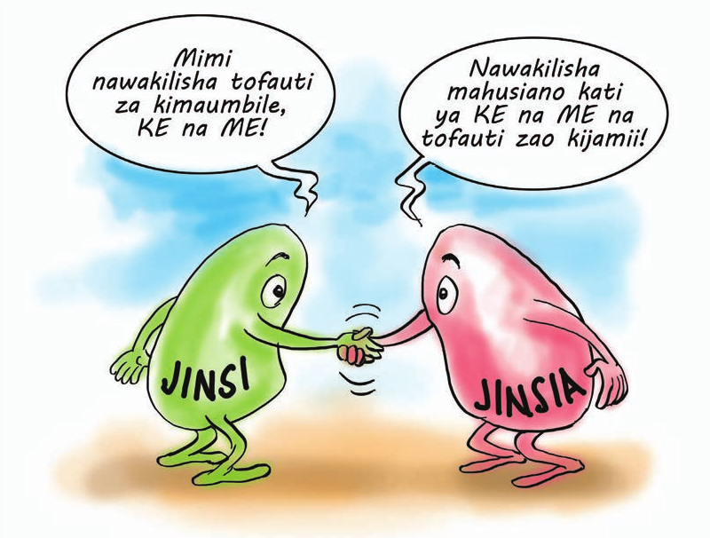
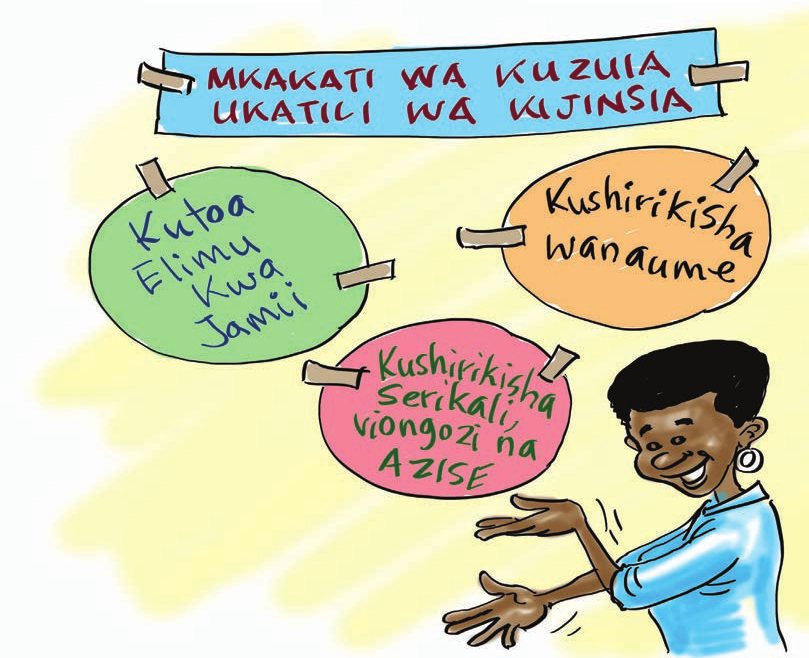

Kujenga uwezo wa washiriki juu ya dhana ya jinsia na ukatili wa kijinsia katika jamii
Baada ya kukamilika mada hii, washiriki watafahamu;
Mwezeshaji toa mchango wako kuhusu maana ya jinsi na jinsia na ueleze mahusiano baina ya dhana hizi kwenye jamii kama inavyofafanuliwa hapa chini
Ni hali ya kuwa na maumbile ya kike au kiume. Ni maumbo aliyozaliwa nayo mwanamke au mwanaume, na ambayo hayawezi kubadilika.
Hata hivyo kuna baadhi ya nchi ambazo wanaweza kubadilisha maumbile ya via vya uzazi vya kike kuwa vya kiume na vya kiume kuwa vya kike, kwa njia za upasuaji.Suala hili bado halikubaliki katika jamii na nchi yetu.
Ni neno na pia ni dhana. Kama neno, hutumika kueleze mahusiano ya kijamii kati ya mwanamke na mwanaume.
Kama dhana, neno jinsia, hutumika kuelezea tofauti za kijamii baina ya wanawake na wanaume ambazo zinaonekana kupitia mgawanyo wa kazi, upatikanaji na udhibiti wa raslimali, mitazamo, tabia, maadili na uwezo au muundo wa kaya. Mahusiano haya yanahusiana na hali ya kiuchumi, kisiasa na kiutamaduni na hujengwa na jamii. Pia, mahusiano hayo yanaweza kubadilika kutokana na wakati na kulingana na hali ya kiuchumi kwa wakati husika.
Ni kitendo au hali anayotendewa mwanamke au mwanaume na mtu mwingine bila yeye mwenyewe kukipenda.
Hali inayowaathiri wanawake na wanaume kwa mtizamo kuwa jinsi moja ni dhaifu au ni bora zaidi ya nyingine.
Ni hali ya kutumia nguvu au madaraka kwa madhumuni ya kuminya haki za jinsi moja katika jamii na kunufaisha jinsi nyingine kwa imani kuwa watu wa jinsi hiyo wana haki zaidi kuliko jinsi nyingine
Hali ya kutokuwa na ubaguzi kwa misingi ya jinsia ya mtu katika mgao wa rasilimali au mapato, au katika ufikiaji wa huduma mbalimbali za kijamii. Usawa wa kijinsia unaweza kupimika kwa mifano ya kuwepo kwa fursa sawa au matokeo sawa. Au kwa kifupi, tunaweza kusema kuwa ni haki, majukumu na fursa sawa kwa wanawake na wanaume na kwa wasichana na wavulana
Wanawake na wanaume ni sehemu ya jamii na ni dhahiri kuwa maendeleo ya jinsi hizi mbili ni ushirikiano wa pande zote pamoja na juhudi na mchango kutoka makundi mbalimbali ya kijamii. Makundi haya ni kama vile, serikali, mashirika yasiyo ya kiserikali na ya hiari, wahisani, mashirika ya kijamii na wanawake kama kundi la msingi.
Ni hali ya kuainisha majukumu ya kazi na kuyagawa kwa wanawake na wanaume kwa misingi ya ubaguzi wa kijinsia iwe kwenye familia au jamii kwa ujumla. Wanawake na wanaume hujifunza majukumu haya kwenye malezi na makuzi yao kuanzia utotoni.
Hizi ni kazi mbalimbali, wajibu na matarajio ambayo Jamii imetafsiri na kupanga kufanywa na wanaume, wanawake, wasichana na wavulana. Kazi hizi sio lazima ziwe za kibailojia. Kwa hiyo zinaweza kubadilika kufutana na wakati na mazingira yaliyopo. Wajibu uliopangwa kufuatana na jinsi ni wajibu wa Jamii na umekuwa ukibadilika kutokana na wakati.
Haya ni majukumu yatokanayo na maumbile ya kibaolojia (yaani kuwa me au ke). Kwa mfano kubeba mimba, kujifungua na kunyonyesha ni kazi za jinsi ya kike wakati wanaume hutoa mbegu katika hatua za uzazi. Majukumu haya hayabadiliki.
Dhana hii inaelezea jinsi mwanaume na mwanamke wanavyohusiana katika shughuli za kijamii, kisiasa, kiuchumi na kiutamaduni katika Jamii yao. Mahusiano haya ya kijinsia kwa kawaida hutokana na mtiririko wa malezi na makuzi na huimarishwa na mtu binafsi, familia, taasisi za kijamii, utamaduni na itikadi.
Unatafsiriwa kuwa hali ya wanawake kushiriki kwa idadi na mchango sawa na wanaume katika katika kushiriki kufanya maamuzi yanayolenga kuleta maendeleo ya kijamii, kiuchumi, kisiasa na kiutamaduni.
Ni mbinu/njia ya kuwafanya wanawake na wanaume kuwa na fursa zinazolingana za kupata au kutumia rasilimali na huduma kama vile ardhi, fedha, mtaji, mafunzo na huduma za afya bila kujali tofauti za kijinsia
Ufahamu wa mahitaji na matarajio ya wanawake na wanaume na hali zao za kutokuwa na usawa na ufahamu kuwa hali hiyo husababishwa na mahusiano ya kijamii ambayo yanaweza kubadilika.
Dhana hii inahusu kutambua kuwa wanawake na wanaume wana jukumu tofauti katika Jamii na kuwa mahitaji yao huwa tofauti na hivyo sharti yatambuliwe katika michakato ya maendeleo.
Ni hali ya kutambua tofauti za kijinsia na kushindwa kuchukua hatua ili kubadili hali hiyo
Ni nafasi/mamlaka/madaraka aliyonayo mwanaume na mwanamke katika jamii husika ambayo kwa kiwango kikubwa ndiyo husababisha mgawanyo wa rasilimali katika jamii husika.
Mwezeshaji funga mjadala wa mada kwa kueleza kuwa katika jamii nyingi dhana ya jinsia imekuwa ikichukuliwa kuwa ni suala linalohusu wanawake. Elezea kuwa dhana hii si sahihi hata kidogo. Ni muhimu washiriki watambue kwamba dhana ya jinsia lengo lake ni kuelezea mahusiano baina ya wanawake na wanaume kwenye jamii na kuchambua kama mahusiano hayo hayabugui wanawake au wanaume bali yamejengwa katika misingi ya usawa. Hata katiba ya Jamhuri ya Muungano wa Tanzania ya mwaka 1977 (ibara ya 12 na 13) inatambua usawa baina ya wanawake na wanaume.
Malizia kwa kuwapa kazi za makundi washiriki waeleze kwa mifano halisi aina za ubaguzi wa kijinsia ulioshamiri kwenye jamii yao (mfano wa kiuchumi, kisiasa, kiutamaduni).Hali kadhalika washiriki waeleze hatua zinazoweza kufanyika ili kuondoa tatizo hilo. Uwasilishaji ufanyike mapema siku inayofuata.
Angalizo: Ni muhimu kwa mwezeshaji kuhakikisha kwamba washiriki wameielewa vema mada ya dhana ya jinsia kabla ya kuanza kuzungumzia ukatili wa kijinsia.
Baada ya zoezi hapo juu kukamilika, mwezeshaji endeleza mjadala kwa maswali na bangua bongo. Waulize washiriki maswali yafuatayo?
mwezeshaji fafanua kuwa ukatili wa kijinsia ni tatizo kubwa ambalo linawanyima uhuru wanaume, wanawake na watoto kufurahia haki zao msingi ambazo pia ni haki za binadamu. tatizo hili lipo duniani kote kwani tafiti zinaonesha kuwa mwanamke mmoja katika kila wanawake watatu katika maisha yake amewahi kufanyiwa ukatili wa kijinsia ama kimwili, kingono na kisaikolojia. tafiti pia zaonesha kuwa duniani kote, asilimia 16-52 ya wanawake wanafanyiwa ukatili wa kimwili na waume au wapenzi wao walau mara moja katika maisha yao. hali duni ya kiuchumi na kutofahamu sheria kunawafanya wahanga wengi wa ukatili wa kijinsia kushindwa kupata msaada pindi wanapofanyiwa ukatili huo. sehemu hii inazungumzia ukatili wa kijinsia kukuza ufahamu wa washiriki juu ya dhana hiyo.
baada ya majibu ya washiriki mwezeshaji wafafanulie washiriki maana ya ukatili wa kijinsia na maneno mengine yanayoambatana na dhana ya ukatili wa kijinsia kama inavyoainishwa hapo chini.
Ni ukatili unaowapata wanaume, wanawake, watoto kike na watoto wa kiume unaosababishwa na miiko na majukumu ya kijinsia na pia kutokuwepo kwa nguvu sawa kati ya mwanaume na mwanamke. Ukatili huu hufanywa kwa mtu kwa sababu tu ya jinsi yake. Mifumo ya kijamii, mila, desturi na tamaduni huchangia kwa kiwango kikubwa ukatili wa kijinsia. Ukatili wa kijinsia huwapata wote wanaume na wanawake. Hata hivyo tafiti zaonesha kuwa wanawake ni waathirika wakubwa zaidi wa ukatili wa kijinsia katika jamii kuliko wanaume .
Shirika la Afya Duniani (WHO) limetoa maana ya neno ukatili kuwa ni matumizi ya nguvu au mamlaka dhidi ya mtu mwingine yanayoweza kusababisha majeraha, kifo, madhara ya kiakili, kudumaa au kukosa mambo muhimu kwa yule anayetendewa ukatili.
Hivi ni vitendo vya ukatili wa kijinsia vinavyopelekea, au vinavyoweza kusababisha mwanamke kupata madhara au maumivu, yanayotokana na vitisho, kulazimishwa au kunyimwa uhuru, kunakoweza kufanywa mbele ya jumuia au eneo la faragha.
Mwezeshaji eleza kuwa ukatili wa kijinsia umegawanyika katika makundi mbalimbali. Mfano ukatili wa kimwili, ukatili wa kisaikolojia, ukatili wa kingono, ukatili utokanao na mila na desturi zenye madhara, ukatili wa kiuchumi, ukatili wa kijinsia sehemu za kazi n.k. Toa mchango wako kwa kueleza aina za ukatili wa kijinsia na madhara yake kwa jamii Kama inavyoainishwa hapo chini
Ukatili wa kimwili ni matendo anayofanyiwa mwanamke au mwanaume kwa kuumizwa sehemu za mwili wake. Wakati mwingine muathirika wa ukatili hupata maumuvi bila watu wengine kutambua kuwa amepata maumivu.
Mifano ya matukio ya ukatili wa kimwili ni: Shambulio la mwili, kukeketa wanawake, kupiga, kuchoma mwili moto, matumizi ya silaha kwenye mwili, matumizi ya vitu vyenye ncha kali kudhuru mwili, kuvuta nywele, kusukuma, kunyonga mkono au mguu, kupiga kichwa au kubamizia ukutani n.k.
Madhara yanayoweza kutokea kwa ukatili huu ni: Majeraha, ulemavu wa kudumu, vifo, huzuni, msongo wa mawazo, kushindwa kutimiza majukumu ya ulezi, uzazi na uzalishaji, kuharibika kwa mimba, hofu, hasira, kutokuaminiana katika familia, na maambukizi ya VVU/UKIMWI ambayo husababisha magonjwa nyemelezi, matokeo yake ni kujitenga na jamii, kushindwa kufanya kazi, na kutumia fedha nyingi kwa matibabu na hivyo kupunguza kipato cha familia.
Ukatili huu ni ule unaohusisha masuala ya ngono na mahusiano ya mapenzi iwe katika ndoa au nje ya ndoa. Ukatili huu umewasababishia madhara makubwa waathirika hasa wanawake ikiwemo kuharibu mirija ya uzazi, kupata mimba zisizotarajiwa na kuambukizwa magonjwa ya zinaa na VVU/UKIMWI
Mifano ya ukatili wa kingono ni: Kutumia vitu kama chuma, fimbo, kisu, mti n.k kuingiza kwenye sehemu za siri za mwanamke au mwanamume, kubaka, kujaribu kubaka/jaribio la kubaka, kulawiti (kuingilia kinyume cha maumbile), usafirishaji/utoroshaji wa binadamu kwa ajili ya ngono, utumwa wa kingono, unyanyasaji wa kingono, bugudha za kingono mfano kutomaswa sehemu za matiti, makalio, kiuno na sehemu nyingine za mwili bila ridhaa, kulazimisha tendo la ndoa hata kama ni wanandoa, ndoa za utotoni, kupima ubikira kwa wasichana, kulazimisha kutoa mimba, kulazimisha kutia mimba, kulazimisha ngono bila kujali maambukizi ya magonjwa kama VVU na UKIMWI na magonjwa mengine ya zinaa na kulazimisha kufanya biashara ya ukahaba.
Tamko la Kimataifa la haki za binadamu ni “tamko” halina masharti ya kuzibana nchi kutekeleza haki za binadamu kisheria. Pamoja na kuwa halina nguvu kisheria. Tamko hili linaheshima kubwa sana kimataifa na nchi nyingi wamelitambua na kuingiza kwenye katiba zao. Tanzania imefanya hivyo katika ibara ya 9 (f ) ya Katiba ya nchi ya mwaka 1977, kama ilivyorekebishwa mara kwa mara.
Mwathirika wa ukatili wa kingono anaweza kupata madhara yafuatayo;- kupata mimba bila kupanga; kupata magonjwa ya magonjwa ya zinaa ikiwemo VVU na Ukimwi; kuharibika kwa mfumo wa uzazi, ugumba; maumimivu yasiyoisha;kupoteza hamu ya kufanya tendo la ndoa; kupoteza maisha; ulemavu na majeraha; kutokujiamini, hasira msongo wa mawazo na huzuni; kutokwa na damu kupita kiasi; hofu na kukosa amani ya nafsi; kuhisi kutengwa nakupoteza matumaini ya maisha; magonjwa ya akili; majaribio ya kujiua; kuhisi kukosa ulinzi katika maisha; kuhisi kuaibishwa; migogoro kwenye familia; mzigo mkubwa kwenye huduma za afya ya umma; kupungua kwa uzalishaji mali; na kulegalega kwa malezi ya watoto.
Mtendaji wa ukatili huu anaweza kupata hasara zifuatazo: vifungo vya muda mrefu, kutengwa na jamii, maambukizi ya magonjwa ya zinaa na ya kuambukiza mfano VVU na UKIMWI
Hii na aina ya ukatili ambayo humsababishia mtu maumivu ya kihisia na kiakili. Husababisha mwathirika kuona amedharauliwa na kushushwa hadhi yake katika jamii kwa sababu tu ya jinsi yake.
Mifano ya ukatili wa kisaikolojia ni kama ifuatayo: Matusi kwa njia ya ishara au maneno yenye lengo la kudhalilisha, kutishia kufanya fujo, maneno ya fedheha, dharau au kutishia kutoa siri hadharani, kunyang’anywa watoto kwa makusudi, kuingiliwa faragha, kutishia kufanya fujo, kutishiwa kuuawa, kunyang’anywa watoto makusudi, wivu wa kupindukia
Msongo wa mawazo, kujenga hofu, kukosa amani ya nafsi, huzuni, kuhisi kutengwa, madhara ya kukosa usingizi, kupoteza matumaini ya maisha, magonjwa ya akili, majaribio ya kujiua, kuhisi kukosa ulinzi katika maisha, kuhisi kuaibishwa, vifo.
Kupoteza rasilimali watu kwa sababu ya vifo, kukosekana kwa utulivu kwenye jamii kwa hisia za kukosa ulinzi na usalama kwenye maisha.
Ukatili huu ni ule ambao kwa kawaida umejikita kwenye imani za kidini, mila, desturi na tamaduni za kijamii na imekuwa ni sehemu ya maisha ya kila siku ya mahusiano baina ya wanawake na wanaume kwenye jamii husika kiasi kwamba wanajamii wanaona kwamba mila, desturi, tamaduni na imani hizo haziwezi kubadilika. Kwa kawaida mahusiano hayo ya kimila na kitamaduni yamekuwa yakikiuka haki za binadamu mfano; haki ya kumiliki ardhi, haki sawa ya kurithi mali kwa wanaume na wanawake, kutakasa wajane n.k.
Mifano ya matukio ya ukatili utakanao na mila na desturi zenye madhara na athari zake ni kama ifuatavyo; kunyimwa haki ya kumiliki mali, ardhi, na urithi kwa sababu ya jinsi ya mtu, ukeketaji, ndoa za kulazimisha, ndoa za utotoni, kutakasa wajane, kurithi wajane, mauaji ya vikongwe, mauaji ya watu wenye ulemavu wa ngozi, matambiko ya kingono kwa watoto, kufungiwa au kuwekwa ndani kwa shuruti, ndoa za ushirika, ndoa za mkeka, ukatili utokanao na mahari, miiko ya chakula kwa wanawake na wajawazito. Madhara ya ukatili huu ni pamoja na vifo, ulemavu, kujeruhiwa kihisia, kupoteza uwezo na hamu ya kufanya tendo la ndoa, kukosa uhuru, magonjwa, maambukizi kama HIV na VVU, mimba za utotoni, kuharibu sehemu za uzazi kwa kufanyishwa ngono kabla ya kupevuka, kupoteza haki ya kupata elimu kwa sababu ya ndoa na mimba za utotoni n.k.
Ukatili wa kiuchumi ni ule unaonyima fursa za kiuchumi mwanamke au mwanaume ili kuchangia katika maendeleo kwa sababu tu ya jinsi yake. Hii hujengwa na tafsiri ya mahusiano ya kijamii katika kumiliki fursa za kiuchumi.
Mifumo ya kijamii katika nchi yetu inatoa fursa kubwa za umiliki wa mali kwa wanaume kuliko wanawake na kuwafanya wanawake kuwa tegemezi hivyo kusababisha wanawake kutokuwa na sauti kwenye ngazi ya familia na jamii na kutoshiriki au kushirikishwa kwenye maamuzi yanayohusu maisha yao na jamii yao.
Mifano ya ukatili wa kiuchumi ni kama ifuatayo: Kunyimwa fursa za kumiliki ardhi, kunyang’anywa mali kwa sababu za jinsi ya mtu, ubaguzi wa kijinsi katika fursa za kiuchumi na biashara, ubaguzi katika fursa za ajira, ubaguzi katika fursa za elimu, kunyimwa sehemu ya mapato ambayo umechangia uzalishaji wake mfano mazao ya kilimo n.k, kukatazwa kufanya kazi, ubaguzi katika fursa za afya na afya ya uzazi, ubaguzi katika urithi wa mali ya familia kwa sababu ya jinsi, ubaguzi katika fursa za kujielimisha.
Madhara ya ukatili huu ni pamoja na : utegemezi wa kupindukia, umasikini wa kupindukia, ujinga, maradhi, makazi yasiyo bora, ukosefu wa chakula na lishe bora.
Hii ni aina ya ukatili wa kijinsia iliyoenea sana kwenye jamii nyingi Tanzania. Ukatili majumbani hufanywa dhidi ya watoto (wavulana na wasichana), wake, wafanyakazi wa majumbani, walemavu, waathirika wa VVU na UKIMWI, wazee n.k.
Tafiti zinaonesha kuwa watendaji wa ukatili huu ni watu wa karibu sana na waathirika wa vitendo hivyo wakiwemo wazazi, walezi, ndugu, jamaa, marafiki, majirani au waajiri wa majumbani. Sababu kubwa za ukatili huu ni pamoja na mitazamo ya kijamii kuhusu ukatili na unyanyasaji, uwezo mdogo wa mifumo ya ulinzi na ustawi wa jamii nchini n.k
Mifano ya matukio ya ukatili wa majumbani na athari zake ni: Kufanya maamuzi kama kuuza shamba, nyumba nk bila kushirikisha mke/mume hivyo kuathiri maslahi ya familia, kuzuia wanakaya kutafuta fursa za ajira kwa sababu ya jinsi zao, kubagua watoto kwa kuzingatia misingi ya jinsi zao, kugawa urithi kwa kuzingatia misingi ya jinsi, kuwanyima watoto fursa ya kupata elimu, kuozesha wanakaya ndoa za utotoni, kuajiri watoto chini ya miaka 18 kufanya kazi za ndani/majumbani, kuwafanyisha watoto na wafanyakazi wengine majumbani kazi za ndani/majumbani hadi usiku wa manane, kuwanyima chakula watoto, na wanakaya wengine, kuwanyima ujira wao wa mwezi wafanyakazi wa majumbani, kupiga, kuchoma moto sehemu za mwili kwa watoto, wazee au wanakaya wengine, kunyanyapaa na kuwatenga wagonjwa hasa wa VVU na UKIMWI, matusi kwa wanakaya, wanafamilia, kutumia vitu kama vyuma, kisu, miti na vitu vingine vyenye ncha kali kuadhibu wanakaya, ubakaji , kufanya jaribio ya kubaka, kulazimisha ngono
Madhara ya ukatili wa majumbani ni pamoja na: umasikini, utegemezi, kupoteza upendo miongoni mwa ndugu, jamaa na marafiki, migogoro ya kifamilia, mimba za utotoni, ujinga, maradhi, ulemavu wa kudumu, migogoro isiyoisha n.k.
Mwezeshaji waeleze washiriki kuwa ukatili wa kijinsia unaligharimu mno taifa na jamii. Eleza kwamba Kiwango cha ukatili wa kijinsia ni kikubwa. Utafiti wa Ukatili Dhidi ya Watoto Tanzania (UUDWT) umebainisha kuwa wasichana 3 kati ya 10 na mvulana 1 kati ya 7 wanasema walifanyiwa ukatili wa kijinsia kabla ya kufikisha miaka 18. Kiwango cha ukatili wa kijinsia kwa wasichana ni mara mbili zaidi. Kwenye utafiti huu zaidiya asilimia 6 ya wasichana wenye umri kati ya miaka 13 hadi 24 ambao walipata mimba wanasema angalau ujauzito mmoja ulitokana na kufanyiwa ukatili wa kijinsia. Robo ya wavulana na wasichana wamefanyiwa ukatili wa kiakili na kwamba kiwango cha ukatili wa kimwili kipo juu sana hapa nchini. Eleza kuwa tafiti zinaonesha kuwa matumizi ya nguvu ni jambo la kawaida kabisa kutenda ukatili wa kijinsia kwenye jamii zetu. Kwenye utafiti wa UUDWT takriban nusu ya wavulana wa Tanzania, na wasichana 7 kati ya 10 wanasemanguvu au vitisho vilitumika katika kujaribu au kuwalazimisha kufanya ngono na kwamba matukio mengi ya ukatili hufanyika majumbani au shuleni na hufanywa na watu tunaowafahamu.
Mwezeshaji toa mchango wako juu ya sababu au vyanzo vya ukatili wa kijinsia kama inavyoainishwa katika sehemu hii.
Kuna sababu mbalimbali zinazopelekea ukatili wa kijinsia ikiwemo, mifumo ya jamii isiyozingatia usawa baina ya wanawake na wanaume, wanawake kutokuwa na sauti na ushiriki kwenye vyombo vya maamuzi ndani ya jamii, mitazamo hasi ya wanajamii kwa kuwaona wanawake ni daraja la chini kuliko wanaume, nadharia zisizo sahihi kuhusu majukumu ya wanawake na wanaume kenye jamii, mfumo dume kwenye jamii unaolinda maslahi ya wanaume pekee, mila, desturi, tamaduni na imani za kidini.
Pamoja na sababu hizo, nyingine ni umasikini, kuanguka kwa mifumo ya kijamii inayolinda maslahi ya wanajamii wote bila kujali jinsi, ukimya wa jamii kukemea matendo ya ukatili wa kijinsia ikiwemo kuwapa kinga na kuwatetea watendaji wa ukatili huo, kukosekana kwa utekelezaji wa sheria za kudhibiti vitendo vya ukatili wa kijinsia, uelewa mdogo wa wanajamii kuhusu madhara ya ukatili wa kijinsia, familia zao na jamii, kukosa ushirikiano kwenye vyombo vya ulinzi, usalama na sheria.
Ikiwa unakutana na kiongozi wa kimila au dini kwa mara ya kwanza unaweza kumuuliza maswali yafuatayo:
Ikiwa ukatili wa kijinsia utatokea kwenye kaya yako au ndani ya jamii unaweza kupeleka taarifa kwenye sehemu zifuatavyo
Mwezeshaji funga mjadala kwa kueleza kuwa sheria za nchi zinatambua baadhi ya makosa ya kijinsia kama makosa ya jinai yanayostahili adhabu ikiwemo kifungo cha muda mrefu.. Sheria hizi ni pamoja na Sheria ya Kanuni ya Adhabu, Sura ya 16, Sheria ya Ndoa ya Mwaka 1971 na Sheria ya Mtoto ya Mwaka 2009. Eleza kuwa Sheria ya Kanuni za Adhabu ndiyo sheria kubwa yenye kutoa adhabu kwa kutenda makosa ya jinai hapa Tanzania. Katika makosa mengi ambayo yametamkwa na sheria hii kuwa ni ya jinai, yamo makosa mengi ndani yake ambayo yanatokana na ukatili wa kijinsia. Sheria hii inaharamisha vitendo kama inavyoainishwa kwenye jedwali hapo chini: